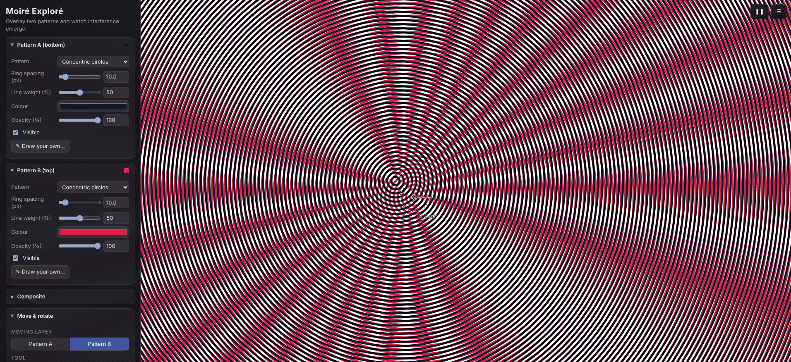
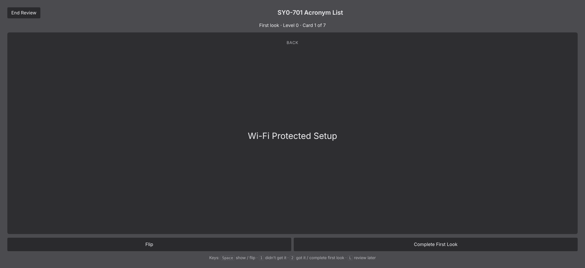
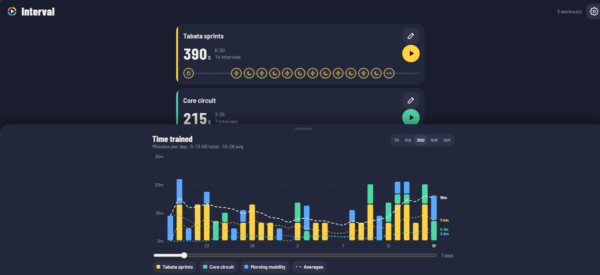
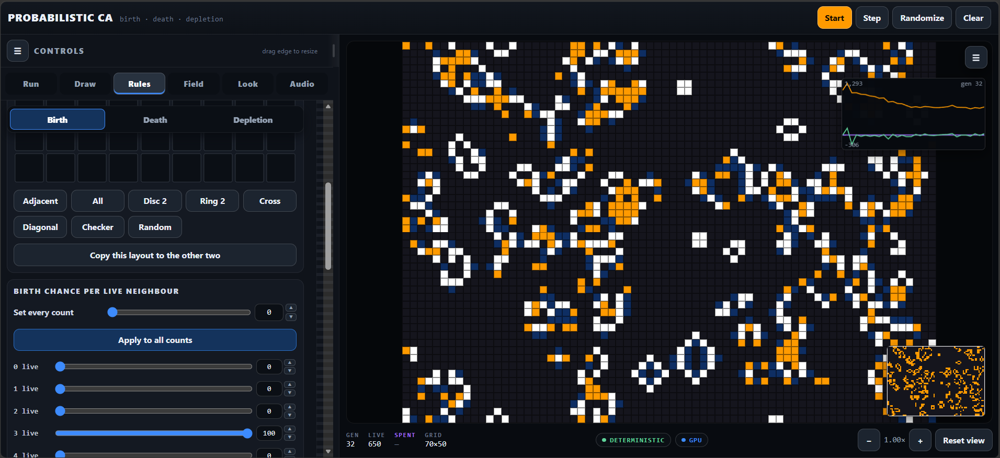
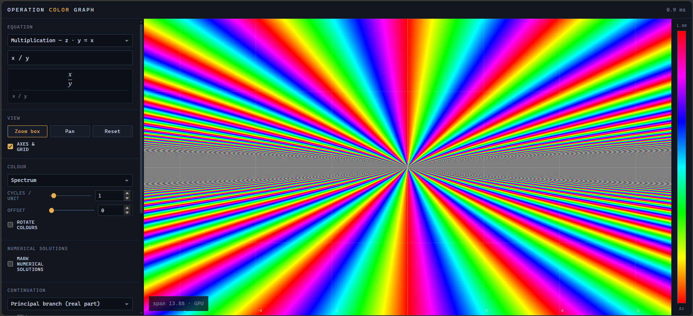

Moiré Exploré
Layer two patterns and watch moiré interference fringes appear as they move:
- Pick from preset patterns (lines, grids, circles, spirals, dots...) or draw your own tile
- Set each layer's colour, opacity, and blend mode
- Drag, rotate, and scale a layer by hand, or animate it with presets or a drawn path

Flashcards
A single-file web port of my Godot flashcard app:
- Cards can live in any number of decks, written in markdown with images and audio
- Spaced repetition with Leitner levels on golden-ratio intervals
- Imports Anki .apkg decks, and ships with the CompTIA Security+ SY0-701 acronyms

IntervalTimer
Interval timer with a simple core I can get behind:
- Create a workout and add intervals
- Set interval durations
- Add or draw images, or add video to serve as instructionals for intervals

Probabilistic-Cellular-Automaton
An extended variant of Conway's Game of Life, incorporating controls for:
- Setting the probabilities of the rules for cell evolution
- Changing neighborhood configurations
- Drawing tools
- Neighborhood depletion mechanics

OpColorGraph
Have you ever taken a function, added a constant to it controled by a slider, and observed how the line changes when sliding it back and forth? Well, now you can view all the changes at the same time, with the difference represented as a shift in hue.